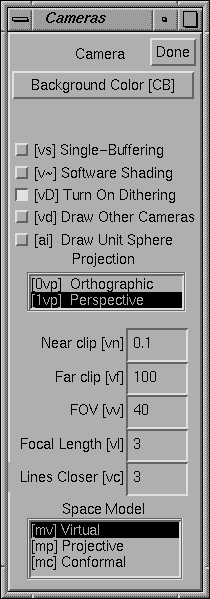

3.7 Cameras
Uma câmera no Geomview é o objeto que corresponde a uma janela de câmera.
Por padrão existe somente uma câmera, mas é possível ter tantas quantas
você quiser. Você pode controlar certos aspectos do objeto visível atualmente na janela de câmera
arrastando em cada janela de câmera via o painel Cameras.

Figura 3.8: O Painel de Câmera.
Se o objeto alvo for uma câmera, o painel de câmeras (Cameras) afeta essa
câmera. Se o objeto alvo não for uma câmera, o painel de câmeras (Cameras)
afeta a câmera atual (current camera). A câmera atual é a câmera da
janela que o cursor do mouse está nela, ou estava mais recentemente se o
cursor não estiver em uma janela de câmera. Dessa forma, se você usa teclas
de atalho para as ações no painel de câmeras (Cameras) enquanto o cursor
estiver em uma janela de câmera, as ações aplicam-se a aquela câmera, a menos que você tenha
explicitamente selecionado outra câmera.
Para criar novas janelas de câmera, use a tecla de atalho v+,
ou veja o menu arquivo (File) no painel principal (Main).
- Single-Buffering
- Normalmente, janelas do Geomview são armazenadas em áreas de memória duplas (double-buffered): Geomview desenha a
figura seguinte em uma janela escondida, então alterna as áreas de memória para fazer
essa janela completamente visível em algum momento. Sobre muitos sistemas operacionais, a memória para a área de memória escondida
vem da apropriação indevida de metade dos bits de cada pixel de tela, reduzindo a resolução de
cor. Quando a opção área de memória simples (single-buffering) for habilitada, as películas de tela de cada
cena está sendo desenhada, mas você pode pegar imagens planas com redução de granularidade
estremecendo artefatos. Área de memória simples é possível se Geomview for compilado com
GL ou com OpenGL, mas não com gráficos desenhados com recursos únicos e exclusivos do X.
- Dither
- Muitos monitores oferecem menos que 24 bits por pixel (8 bits para cada vermelho, verde,
e azul) convencionalmente suficiente para mostrar gradações de cor simplesmente.
Quando tenta mostrar uma cor não acuradamente disponível no monitor,
Geomview normalmente estremece (dithers), modificando as cores do pixel para algumas vezes mais brilhante,
algumas vezes mais escuro que o valor desejado, de forma que a cor disponível sobre uma área
é uma melhor aproximação para a cor verdadeira que um pixel simples pode ter.
Efetivamente perdas de resolução espacial são para ganhar resolução de cor.
Esse compartamento não é sempre desejável, todavia. Desabilitando Dither
fornece menor granularidade, mas a precisão de cores é menor, das imagens.
- Software Shading
- Esse botão controla se Geomview faz cálculos de sombreamento via software.
O padrão é permitir que o hardware manuseie esses cálculos, e no espaço Euclideano
esse caminho é o melhor sempre porque é o caminho mais rápido. No espaço hiperbólico e
também no espaço esférico, todavia, os cálculos de sombreamento que o hardware
faz são incorretos. Clique sobre esse botão para habilitar a forma correta mas lenta
do cálculo de sombreamento via software.
- Background Color
- Esse botão faz surgir um modificador de cores que você pode usar para escolher a
cor de fundo da janela da câmera.
- PROJECTION
- Esse navegador permite a você selecionar entre projeção perspectiva ou projeção ortográfica
para essa câmera.
- Near clip
- Essa caixa de texto determina a distância nas coordenadas do objeto mundo do próximo plano de
corte a partir do ponto de visão. Deve ser um número positivo.
- Far clip
- Essa caixa de texto determina a distância nas coordenadas do objeto mundo do plano de corte
mais distante a partir do ponto de visão. Deve ser um número positivo e em geral
deve ser maior que o valor de Near clip.
- FOV
- Essa caixa de texto é o campo de visão da câmera, medido em sua menor direção.
No modo perspectiva, essa caixa corresponde a um ângulo em graus. No modo ortográfico,
essa caixa de texto corresponde ao tamanho linear do campo de visão. Esse número pode ser modificado
com o mouse no modo Cam Zoom.
- Focal Length
- A distância focal pretende pretende sugerir a distância da câmera a
um plano imaginário de interesse. Seu valor é usado quando alternamos
entre as visualizações ortográfica e perspectiva (e durante visualização stereo),
de forma a preservar o tamanho aparente de objetos sendo desonesto quanto à distância focal
da câmera. Distância focal também afeta a interpolação de movimentos de translação
efetuados usando o mouse. A velocidade do movimento para adiante (nos modos translação, vôo e
no modo orbital) é proporcional à distância focal; e objetos desonestos quanto à
distância focal da câmera translacionam lateralmente na mesma razão que
o cursor do mouse. Finalmente, no modo de projeção N-Dimencional, câmeras são substituídas
de volta através da distância focal a partir da projeção tridimensional da orígem do objeto mundo.
- Lines Closer
- Esse número tem a ver com o caminho pelo qual as linhas são desenhadas. Normalmente a área de armazenamento temporário do algorítmo que controla as
coordenadas do eixo z podem confundir-se na hora de desenhar linhas que localizam-se
exatamente sobre superfícies (tais como as arestas de um objeto); devido a erros de arredondamento
de máquina, algumas vezes as linhas parecem estar em frente à
superfície e algumas vezes elas parecem estar por detrás da superfície. O valor
Lines Closer é um fator de correção — Geomview modifica sutilmente todas as linhas que o algorítmo da área de armazanamento temporária desenha
fechando para a câmera através desse fator. O número deve ser um inteiro
pequeno; tente 5 ou 10. O valor zero (0) desabilita esse recurso completamente. Escolhendo
valores grandes tornará as linhas visíveis mesmo quando elas devam ser
escondidas.
- SPACE MODEL
- Essa opção determina o modelo usado para desenhar o objeto mundo. É mais útil em
espaços hiperbólicos e esféricos. Você provavelmente não necessitará tocar esse
navegador se você permanecer no espaço Euclideano. Para mais informação sobre
esses modelos, veja Geometrias Nao-Euclidianas.
- Virtual
- Esse é o modelo padrão e representa a visualização natural de dentro
do espaço.
- Projective
- Corresponde ao modelo projetivo do espaço hiperbólico e do espaço esférico. Geoms movem-se
obedecendo as isometrias do espaço, e câmeras movem-se através de movimentos Euclideanos.
Por padrão em modelos projetivos, a esfera unitária Euclidiana é desenhada.
No espaço hiperbólico essa esfera localiza-se no infinito. No espaço Euclideano
o modelo projetivo é o mesmo que o modelo virtual exceto que a
esferea é desenhada por padrão.
- Conformal
- Corresponde ao modelo conformal do espaço hiperbólico e do espaço esférico. Geoms movem-se obedecendo
as isometrias do espaco, e câmeras move-se através de movimentos Euclideanos. No
espaço Euclidiano, o modelo conformal equivale a inverter tudo na
esfera unitária.
- Draw Sphere
- Essa opção controla se Geomview desenha a esfera unitária ou não. Por padrão a
esfera unitária aparece no modelo projetivo e no modelo conformal. No
espaço hiperbólico a esfera é colocada no infinito. No espaço esférico corresponde
à esfera equatorial.
- Done
- Esse botão dispensa o painel de Cameras.